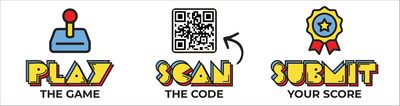
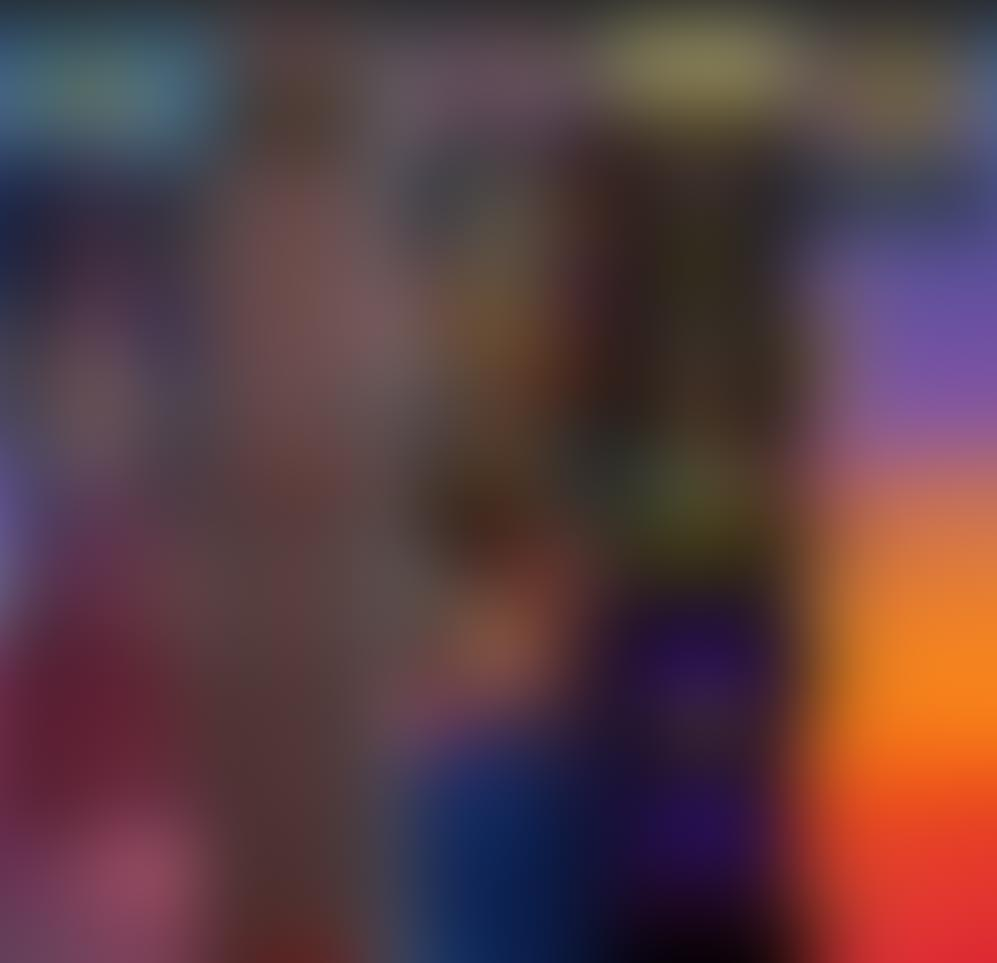
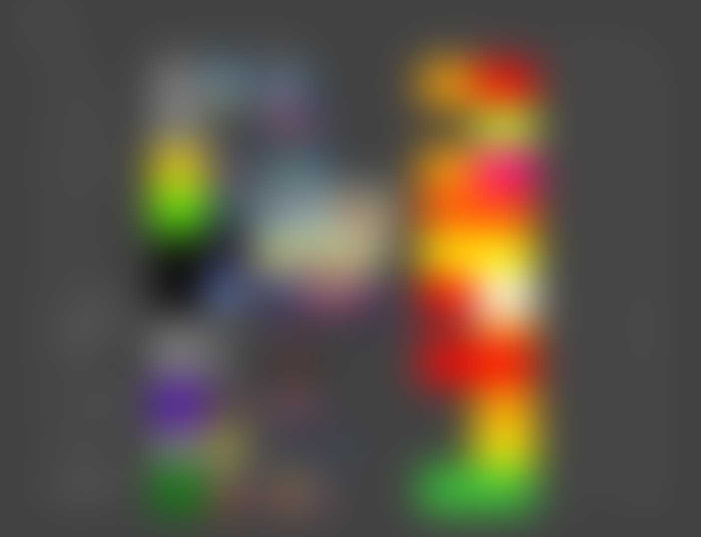
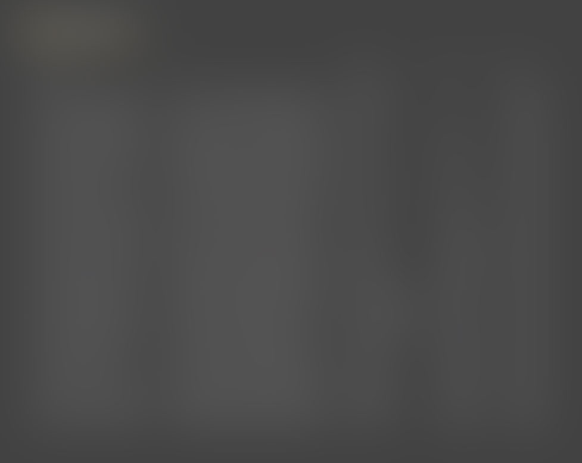

$ cd ~/projects/agon
> Agon_
Jan 2022 - present
Agon runs high-score competitions on real arcade and pinball machines. Players play, scan the QR code on the machine and submit their score with a photo as proof. No account or app is needed. A scoreboard screen next to the machines shows the leaderboards, so everyone can see who has the best score.
It started in 2022 as a Discord bot for a monthly competition on my Virtual Pinball machine. Players submitted their scores to the bot, and at the end of each month it announced the winner. Since then it grew into software for my arcade rental company, Overcade, and the Discord bot is gone.
Agon has three parts:
- A web app in Angular with the leaderboards, the score form and an admin area.
- A Spring Boot backend with a REST API and a PostgreSQL database.
- The scoreboard screens: a Raspberry Pi behind a TV, running Chromium as a kiosk.
The screens run at events where nobody can fix them, so they look after themselves. Without a known network they open their own Wi-Fi hotspot, so I can set up the venue's Wi-Fi from a phone, and I can manage them remotely. A nice solution.
The whole stack runs with Docker Compose on my own server. A merge to the main branch is tested, built and deployed automatically.




